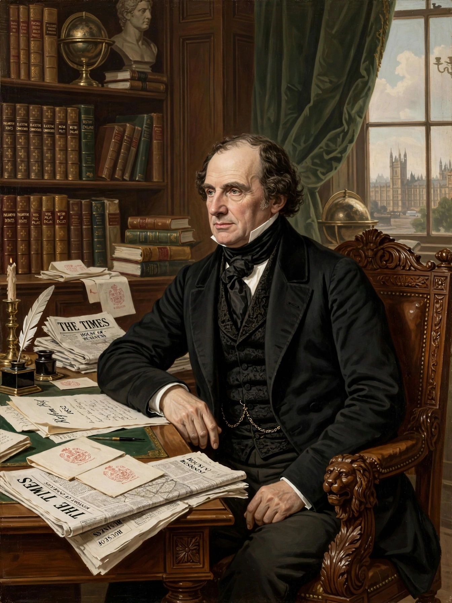

John Russell, 1st Earl Russell (1792–1878), known as Lord John Russell, was a British Whig and Liberal statesman who served twice as Prime Minister of the United Kingdom, from 1846 to 1852 and from 1865 to 1866.

Russell was a leading architect of the Reform Act 1832, which expanded the franchise. As prime minister he responded to the Irish Famine, repealed-era economic changes and promoted public education and religious liberty. He later served as Foreign Secretary under Lord Palmerston.
He was grandfather of philosopher Bertrand Russell. Raised to the peerage as Earl Russell in 1861, he led his second government from the House of Lords.